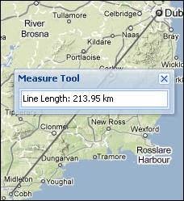

Watch out for OpenLayer Distances¶
- date:
2010-04-29 22:54
- author:
admin
- category:
javascript, web development
- tags:
bing, errors, geodesic, measurements, openlayers
- slug:
watch-out-for-openlayer-distances
- status:
published
I had the fortune on my most recent project, a MapFish mapping system, of having someone else do some thorough testing. One thing that had escaped me, was both the measure tool and area tool were returning incorrect results.
{kind=link}
The distance as-the-crow flies between Dublin and Cork is 219 kilometres (136.08 miles in old money) wheras my tool was returning 357km. Having never driven this route it didn’t set off any alarm bells. Its also not the sort of function I’d unit test, - one as its in JavaScript, and two as the sample code seemed to work “out-of the box.”
It turns out measurements are planar by default, as briefly referred to in the OpenLayers API docs (although not on the actual measure tools pages..), and there is a geodesic parameter. By default this is set to false, so in a Mercator projected map (so anything using Google, Bing, or OpenStreetMap background mapping) measurement tools will be wrong. Maybe something to check if you’ve created a system - I’ve been 6 months working with OpenLayers and somehow managed to miss this one. Isaac@MSDN describes Geodesic as follows:
“Geodesic is a fancy (and concise) way of saying a locally path-minimizing curve. This, in turn, is just a fancy (and mathematical) way of saying that a taught string on a surface between two points will fall into such a path.”
In fairness the OpenLayers Measurement demo makes this clear:
Note that the geometries drawn are planar geometries and the metrics returned by the measure control are planar measures by default.
If your map is in a geographic projection or you have the appropriate projection definitions to transform your geometries into geographic coordinates, you can set the “geodesic” property of the control to true to calculate geodesic measures instead of planar measures.
To set the geodesic option use code similar to the example and pass in the geodesic parameter:
measureControls = {line: new OpenLayers.Control.Measure(OpenLayers.Handler.Path,
{persist: true, geodesic: true})
OpenLayers is not alone in this. From the Google Maps API docs:
Polylines represented on the map are straight lines conforming to the current projection. That is, they appear straight on the map, but may in fact not properly account for the curvature of the earth.
If you instead wish to draw a geodesic (a segment of a “great circle” representing the shortest distance between two points on the surface of the earth), you will need to pass ``geodesic:true`` in the ``GPolylineOptions`` argument of the ``GPolyline``.
Again code can be found in the docs, and a geodesic parameter must be set to true:
var polyOptions = {geodesic:true};
var polyline = new GPolyline([
new GLatLng(40.65642, -73.7883),
new GLatLng(61.1699849, -149.944496)
], "#ff0000", 10, 1, polyOptions);
map.addOverlay(polyline);
I’m not sure if Bing Maps has geodesic properties. This post from Beginning Spatial has a solution for drawing geodesic lines in Bing’s forerunner Virtual Earth. There are also discussions on geodesic measurements on this MSDN messageboard.
Finally in OpenLayers, if you are using the ScaleBar and Spherical Mercator maps then check these recent changes from March 2010.
- orphan:
Comments¶
1. Sean Gillies **
I looked at one of the API example links and find.geojs seems to return [lon, lat] coordinates: http://geocoding.cloudmade.com/BC9A493B41014CAABB98F0471D759707/geocoding/v2/find.geojs?around=city:london;country:uk&object_type=park
Reply2. geographika **
find.js page to return JSON - which can also return coordinates in the [lat, lon] order, and a find.geojs which return geojson in a [lon,lat] order. | Once I updated the code to use the find.geojs all worked fine.
Reply3. Sean Gillies **
Calling ax.set_aspect(1) will square up that plot. Thank you for blogging this. I’m pleased to see that this mostly works out of the box with win32.
ReplyAdd Comment